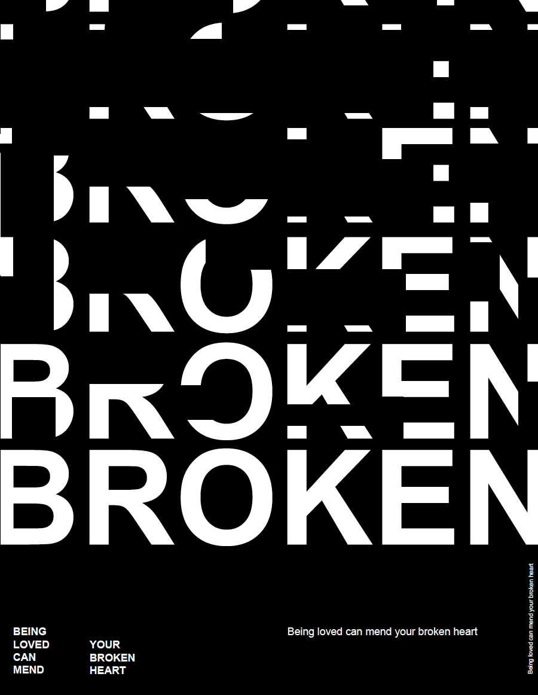

- Welcome to CZ's space! -
-INTRODUCTION-
My name is Caroline Zhu. I'm from China and I'm a second year student of graphic design in OCAD University.
This is my first time learning coding and I'm really interested in this. Because I think coding
is a very important skill in design study (such as web design) and I must master it. Hope I can
learn a lot about coding and use it in many ways with different design ideas through this course.
-ARTIST STATEMENT-
I personally like the simple design very much. My favorite color is black and white.
So as a graphic designer, my work is always inspired by some simple objects. Colour
saturated pictures can confuse the eye—sometimes there's simply too much going on.
Black and white designs on the other hand can seem refreshingly simple and it's often
easier to see and interpret the main focus of the picture.
-MY FAVORITE DESIGNERS-
- Milton Glaser (1929 - 2020)
- David Carson (1955 - )
- Otl Aicher (1922 - 1991)
-MY B&W DESIGN-
